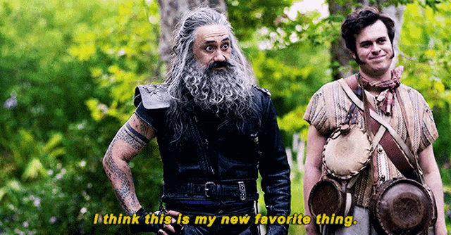
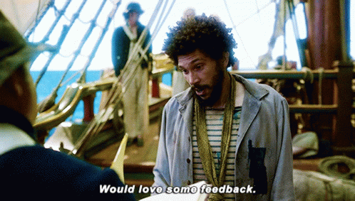
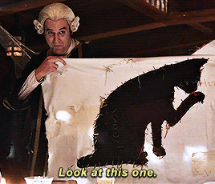
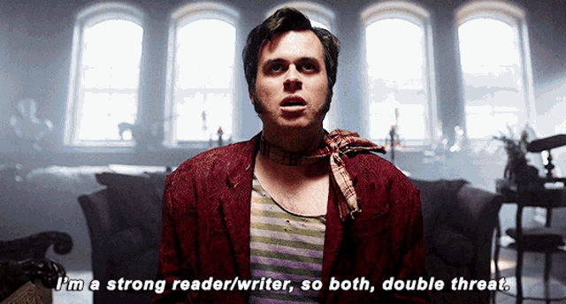
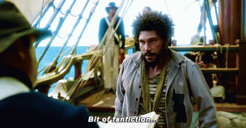
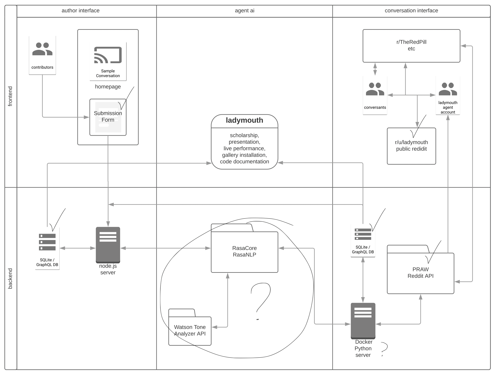

Coding.Care
Field notes for making friends with code
“Any meeting or gathering is a place to practice the future together in the most tangible ways.”
0. Welcome
Rough starts & disconnects
Have you considered learning to code but felt too intimidated to try? Have you struggled to program? Or don’t know how to apply what you’ve learned to things you care about?
Maybe you’re decent with programming skills but you’d still never consider yourself a ‘coder’. Coding Care is about bridging this disconnect — the wide gulf between trying to learn coding and feeling empowered to create with code.
“the prospect of a language that is both hidden and alien to me haunts my work on the net. Like most prejudices, it is born out of fear. I am afraid of what lies buried within the under text”
So many people feel left out of coding communities and spaces for learning about computation — even though we likely interact with computation in some form every day! But I believe it is essential for people who come from all different perspectives to share access to the digital languages which are altering the world and what it becomes. I want to live in a world that is shaped by your point of view and many others’ point of views — not a world shaped only by one narrow take on what computers can be and do.
“I was that convinced that I didn’t have the ability or technological talent to learn how to write code for something. I assumed that every person around me was miles ahead in their practice, and wondered how my passion for creative storytelling could really play into something so new and untouched.”
Don’t stop me now
My own first experiences learning to code felt awful. Lonely. Discouraging. Confusing. I had the sense I was “supposed” to learn programming skills. It felt important, like I needed these tools in order to create the kind of art and language and world I imagined — but it also felt like an insurmountable chore. I had the sense everyone else could hack it but me: Why was I the only one who didn’t understand (or care!) about these dry, boring examples? Why was I getting lost in all the confusing, specialized vocabularies? I felt thrown into a strange landscape——I lacked even the words to ask for what I needed, a basic knowledge of where to look, or an instinct for how to start.
I wish I had known then that learning to code didn’t have to feel like getting stuck. It didn’t have to feel like I was fitting myself into someone else’s stencil shape of a stereotypical engineer. I wish I had known that learning to code could feel like this:
Coding has helped me feel powerful and imaginative, sometimes even unstoppable. I learned (eventually, through trial and error)(and error and error) that coding can be fun — even playful, relaxed, welcoming. It can be creative, thoughtful, crafty.
Once I accepted that the false starts and frustrations of learning to code are part of the process for everyone, that these don’t make us ‘not real coders’, I began to push through these struggles more easily. Whenever I persist with coding, I find it rewards my effort with community connections, creative revelations, and more puzzling challenges.
I have learned I can make coding my own, and that anyone else can too. This guide talks about how to nurture the supportive spaces that make this sparkly code feeling possible.
(En)coding rituals: What are the practices of coding communities?
Code is language and code is a tool for expressing and enacting combined. But coding has “belonged” to far too few for far too long, while the rest of us are considered outsiders to the encoded systems that consume us.
Current rituals and protocols around programming are stale: The stereotype of the hacker in a cave, clacking away at high speed as glyphs flash on a dark screen. The gray-hoodied employees playing ping pong in the office park, building rational white robots and ever-helpful femmebots. The black box that obscures machine learning’s inner workings with hype, mysticism, and elitism.
This guidebook wants to enrich the rituals of programming to include the joy, community, and care necessary to make different kinds of code — and different kinds of worlds. It explores the practices of and in communities which are supporting new kinds of coders, too — some have never ever coded before, some code all the time but have never felt creative doing it!
I continually see new community members who thought they hated code keep returning to our meetups. I see them start referring to themselves as coders, see them share projects that express a distinctive critical voice. This keeps reminding me the importance of open, welcoming communities that provide intersectional, interdisciplinary learning. And it reminds me the impacts our communities can have on how we understand the code-based systems around us.
Code isn’t magic, but we are
“No way, code is magic.”

I believe in our power to reshape the world around us by experimenting wildly with the kinds of code, tools, aesthetics, and ethics we want to see. Although making a piece of code finally work certainly feels like magic, this so-called ‘magic’ does not come from men behind the curtains of big tech, hiding the keys while offering the hype of AI which says, “trust us, this this tech is too complicated for you,” or “just learn this tech our way.” Automated systems have always been deeply intertwined with humans in every way, from ‘mechanical Turks’ to crowd labor outsourced to the global majority. Not quite magic, just us.
- How do we bring our power to the systems we want to affect?
- How do we change systems to suit us if we are stuck outside them – without conforming to their encoded ways of thinking?
- How can we build communities that facilitate alternatives?
These are the open questions explored by this guide — and explored every time we practice code-making in community.
Code as collective: An open question
aka What’s in this pocket guide? What’s a code collective and how do I get one?
Creative Code Collective is the community I started in early 2019 for media artists, activists, writers, makers, and not-yet-engineers to co-work, co-learn, and think critically with code in an inclusive, interdisciplinary space. I sent out a call, because I was looking for others who were struggling with code same as I was, and I hoped there might be another way — at the very least, we could struggle together. We launched with a handful of informal mottos that included:
Scrappy artistic strategies, not perfect code
Collaboration, not competition
We all have skills to teach each other
Throughout the guide I’ll share what I’ve learned while building Code Collective — about coding, connecting, and building collectives. The guide honors and draws from the many mentors and teachers who have inspired it, gathering many resources found along the way. Of course the guide includes many reflections and contributions from community members — including coding examples and exercises, favorite projects and personal accounts — because this work is never done in isolation. I’ll discuss connections I’ve found between coding and other crafts like zine publishing and fiber arts. I’ll also discuss connections to open-source, open-access, and activist movements that shape the approach to how we gather and what we create. The guide is a melange of materials and methods, hopefully a spark of inspiration and the start of many conversations around these ideas.
I am writing both as a representative of this community and also as an individual greatly influenced by it and by so many other creators, thinkers, and teachers. I want to document our work processes and thought processes, and to honor the many entangling threads that go into shaping a caring (coding) community.
The heart of this book are ten principles that have emerged through gathering as Code Collective. They are simple tactics for anyone to employ in their own community practices — or adapt to suit them. Developing these tactics has been intuitive, iterative, and collaborative. They emerged out of desire and instinct. We have expanded and distilled these tactics influenced by other organizations, thinkers, makers, and more; and we have reshaped them continually as our group evolves. All recommendations in the book are intended to be descriptive, not prescriptive. Here’s what has worked for us (and what hasn’t). I invite you to embrace and adapt what works for you and leave the rest. And I am interested in how these tactics change in different circumstances, so if you find something that works better for you, I’d be excited to learn about it too!
Each of the guiding principles is paired with sections called
PLAY ALONG – practical exercises you can try — and
LIVE CODE — brief case studies from other communities of
practice. Although Coding Care is a pocket guide, it also lives in large
part online as a PROJECT SHOWCASE
of active works by Code Collective Community members and as a vibrant RESOURCE HUB,
a database of tutorials, textbooks, projects, code libraries, zines, and
all manner of things we have found useful.
Many of the things we do to sustain supportive communities seem too obvious to mention——or even worse, too obvious to notice — such that they aren’t obvious at all. This guide is meant to remind me that these approaches matter, and to acknowledge how much they have supported me and others along the way. This guide celebrates those ephemeral things that make our caring coding community go. It tries to describe our intuitive wayfinding about how to learn and teach and explore and be together, especially in and through the very things that both draw us in and also scare us, the things that feel both challenging and fun, frustrating and rewarding.
It is not one gesture or one moment, but their accumulation. Each thing we have done intentionally, and unintentionally, adds up to us. To collect, to gather, to hoard like magpies. To embrace fascination with the shiny objects even when we don’t yet know their purpose. To trust their meaning in our gut. To trust connections with other people. To rely on each other, to reconnect again and again, over the smallest things. To be vulnerable in shared struggle, shared silliness, shared delight.
Man(ifest)ual? What this pocket guide isn’t
This guide is not a manifesto, as much as I love a manifesto. Johanna Hedva says, “a manifesto is only ever a document that reaches too far, that speculates too impossibly, and that the only use a manifesto can have is to lay bare why it cannot be manifested, to open itself to all the ways its un-manifestation shapes the world” (2022) – yet here I document what we’ve actually put in the world, alongside what we hope to. Code Collective exists because I believe it is incredibly easy to have communities like this, and I am not the only one. Like code itself, and Code Collective, this guide strives to bring the “impossible” into the “real world” now – as a proposition toward how it can be entirely possible, present, liveable, and thriving. Anarchists call this “prefiguration” but we can just call it fun. And so the pocket guide exists somewhere between a manifesto and a manual. Make of it what you will; I hope you do!
1. We create who we are together
“What I like about code collective is that it’s a community of friends as well as resources. That’s where I can feel like we’re all going on a journey of learning and discovery together.”
Code Collective is a self-organizing community of artists, makers, students, people from all backgrounds — especially including those who have not done much or any coding before. We meet regularly to develop our programming practices in a flexible, co-working, co-learning setting.
We are artists, activists, first-gen students, never-ever coders, computer science majors, writers, dancers, linguists, neuroscientists, trans kids, queer folks, refugees, parents, staff and teachers, independent learners. We come from all career stages and from all levels of expertise. We come from many cultures, sexualities, classes, and genders. Many of us do not come to programming from a STEM-education pipeline (but some do). Our interests exceed the bounds of what our specializations offer and what our vocabularies describe. We all find different ways into code and community.
I started organizing the collective as an intervention. I craved a space where I felt welcome and free to explore without constraint, after experiencing how programming cultures had intimidated me and after witnessing how they had discouraged so many others. I noticed the need for supportive spaces that could value diverse capacities to learn. After my own struggles learning to code, and after a few joyful experiences that showed me it could be otherwise, I wanted to make space for anyone else struggling to find their fit, anyone convinced there was no place for them in the existing systems.
Code Collective was necessary for me because I kept having the
experience elsewhere that no one could understand what I was trying to
make or do. I felt like I was not making sense – and certainly I was not
sure myself – but some glimmer or gut feeling kept pulling me toward
tinkering even though I was hitting walls, getting frustrated, hearing
that it shouldn’t or couldn’t be done. Now I remind new visitors to Code
Collective: If you have an inkling (or a fear) that coding might be
for you, it probably is. Welcome. In this way, coding is like queerness: If you wonder if
you’re queer enough, you are!
Start anywhere
Upon gathering, I ask myself: What does this particular cluster of beings need and want from this gathering? What do we stand for? We get to define it and redefine it for ourselves. At our first meeting in January 2019, attendees cited a mix of desires for joining what would become Code Collective:
- “to learn what [programming] language is used for what”
- “not to be intimidated to try something new”
- “see what others do, have a set time to work on projects and keep skills sharp”
- “not to check the assigned boxes but find an artistic approach. make stuff”
- “ask questions”
- “see others projects and help”
- “see weird projects and find interesting solutions”
- “have an accountability space and a brain trust with shared expertise”
- “conquer my trouble starting and finishing. bounce ideas off of others. build something I’m proud of”
“For me, I could figure out how to code but I didn’t really know what to use for what, for the specific things I like. Also part of the issues here is there’s so many things you could do, right? [For the things I do, three.js is perfect. Once I figured that out, I didn’t need to find other things. For someone who doesn’t know how to code, give them a tool where they can learn to do a lot so they can figure out what tools they need — like p5.js.]”
To explore how we might best create community, I asked each person to share what they were currently working on, some topics they knew about, some topics they wanted to know about. The goal here is to look for overlaps: Where do what you know about and what I want to know about intersect? Here lies magic!
As time goes on, our needs change, and our formats and structures keep pace. We have moved from conversations about possible group projects, mission statements, and organizational concerns toward a more freeform agenda, toward a blend of form and freedom that holds space for anyone’s individual projects and needs during that meeting time.
Be works-in-progress
When beginning the collective, I described its focus as project-based learning, but later refined this to mean more process-oriented than task-oriented work.
The group remains self-directed toward what its members want to make, and the process they take to make it, instead of requiring they absorb a pre-determined curriculum or complete particular objectives. Our conversations focus more on what you are learning along the way, how you are using the tools you found, how your technical choices are shaping your critical thinking, and how did your critical thinking is shaping your technical choices and tools, reciprocally and iteratively.
When we “value process as much as, or more than, outcomes”[^amb], when we maintain a “beginner’s mind” approach no matter what stage of that process, we can stay dynamic and we can acknowledge imperfection and ongoingness. I find this helps relinquish perceived requirements and impossible goals.
This guide is also a work in progress. The guide shows its rough
edges before it is ready. It has been drafted from scratch on a public
website, built using Github, which displays its code repository and
version tracking. This means that every past version of the text is
available to view. Readers can compare differences in the history (for
example) line by line and comment on the text as it changes. This
laid-bare writing process enacts the Code Collective value
growth, not perfection, which is mostly a reminder for
myself. Working this way is a practice of vulnerability and an
invitation for conversation.
Don’t be afraid to show your work
Show your works-in-progress! If you wait for a project to be perfect and finished before you get feedback, you’ll never get the feedback you need to finish.
Sometimes you just have to call the project done, or this phase of it done, because in the next project you will deal with the same themes. You can ask the same questions through a different tool or a different critical lens. If you’re like me, I am always going care about many of the same things, and I’ll return to them.
That’s the trouble with having a life’s work. Amirite?

Build it together, whatever ‘it’ is
There are so many different outcomes and approaches possible for any technical challenge. By spending time with others, especially with different perspectives, we get to see how they might approach the same problem vastly differently. Even with the exact same concept, one person might implement it through a commercial product while another might implement it as an expressive artwork.
Working among others helps us continually question and expand our definitions. Along the way, you could each tackle similar troubleshooting issues in lines of code, but perhaps you would answer the questions that arise very differently based on your own goals. It helps to expand the spectrum of what one could make or invent, as a way to get out of our default modes and expectations for ourselves.
Designing the online presence for Code Collective has been an ongoing collaboration. Through the simple but important work of creating a website, for example, we had to confront and create our collective identity very practically. We got to decide the tone of who we are as a group, how we will present ourselves, and to which publics: How do we describe what we are doing, what we prioritize, what we call ourselves, how we explain our processes, how we support others who join? What format do we put this in? What language do we use? Who do we make sure is included in this process?
Through this process of communication and collaboration among the group members about who we are and what we want to offer, the Code Collective website has expanded from a static landing page into a unique resource hub and project showcase – with a searchable, contributable database of tools, tutorials, research, and projects we have found useful.
“The most challenging part of programming is conceptualizing the problem, and many errors in programming are conceptual errors.” (McConnell 2004)
❤️🩹 PLAY ALONG: Break this code
One of the best ways to get started with learning a new aspect of programming is to take someone else’s example code and learn how it’s working by changing things — just little things to start. What happens if I make this a different color or run it at a different speed? How does it show up on screen? Then break big things — use it for different purposes, combine it with other code.
Find some example code for a website you like by right clicking on
any part of it in your web browser and hitting Inspect.
You should see some windows appear that show the HTML and CSS source code for the site, where you can temporarily and without fear modify the site as you wish. Give yourself a fun mini challenge. The HTML puts items on the screen. The CSS styles those items in different shapes, colors, fonts.
For example: What if a national newspaper had a purple background? Or a different headline.
- Pick an aspect of the page you’d like to change, like the background and right click on it.
- Go to the CSS area that opened when you hit inspect. When you hover
over the section with your mouse, checkboxes will appear next to terms
like
marginandpaddingandfont, for example.
- Find
backgroundorbackground-color:and change what follows it to saypurple.
How about a different headline?
- Try right clicking on a headline you’d like to change and hitting inspect again.
- Find the HTML panel that opened when you hit inspect. Depending on your browser, it’s usually on the left by default, maybe on top. You should see the specific line of HTML that created the headline you see in your browser.
- If you change the text of the headline in the HTML, it will also change in your browser. Try it!
What other experiments with CSS and HTML might you try? What can you learn using this method about how the site you chose was built?
This is a very aesthetic and web-based example, but you can imagine taking this approach to any tutorial or example you see.
Retype it, learn how it works, break it for fun or for your own purposes.
2. We get scrappy
Code Collective endorses
scrappy artistic strategies, not perfect code. We love your
spaghetti code, your half-finished thought, your sketchy mindmap — just
as much as we love the polished work it may one day be. When someone
joins up wanting to try something new, we don’t say, “That’s not what
code is for.” Instead we’re excited to discover yet another thing code
can be for and how we can help them figure it out.
We echo the call from the P5.js community statement, which warns against “code snobs” and assuming or prioritizing types of knowledge.[^p5] There is no programming language empirically better than any other; there’s only the right tool for a particular task, for a particular person, at a particular point in time. It’s totally fine to rely on code libraries and examples and the wisdom of those who came before you. Who doesn’t!? We will always be reliant on collected and collective knowledge.
Don’t wait until you know you’ll do it “perfectly” (or read the whole book, or taken the whole course) before you get started. Half the fun is in adapting unexpected outcomes into your process. Making and learning are reciprocal activities, a mobius strip of embodied knowledge.

Don’t be afraid to break stuff (you can’t really break it)
How do you start getting scrappy instead of studious? Break things! Or at least, don’t be afraid to. The TinkerTank mobile makerspace in Germany starts each of their workshops by selecting a piece of old electronics from their scrap pile — and completely dismantling it. “People are afraid to break things,” workshop leader Johannes May told me, and this helps warm people up to build new, imaginative things from the broken parts.
Too often I don’t get started because I don’t know where to start,
and also because I am afraid to “mess up” what already exists. That’s
what backups and save-as and sketches are for. You can’t (irrevocably)
break anything, in all likelihood. And in the process of tinkering
(which is just breaking with flair) you learn a lot!To tinker is also to mend, to patch up, repair, or
improve in a makeshift way [OED]. The word derives in part from the
tasks of metalworkers (per Miller Puckette & OED).
So try to push through the fear of breaking something, or
doing something “wrong,” to make space for doing something “weird” aka
interesting. So, knowing that you can’t really break it, get
cracking!
I learned to use scrappy artistic strategies from my first
computational arts teacher, Brett
Stalbaum. I was a poet who wanted to make weird books, and he told
me simply, “Pick something small you want to try to make, and use that
to begin learning Python.” Reader—I was terrified. I had been
making tiny GIF poems and had tried and failed repeatedly to teach
myself some HTML, CSS, and Javascript. But none of it would stick.
Still, I trusted Brett, so I found a little example code for a simple
chatbot and used it to make what would become “ladymouth” — a bot that
tries to explain feminism to misogynists online. Along the way, I
learned enough about Python and SQLite and Raspberry Pi and toxic Reddit
forums to make it run, even though I started with zero vocabulary and
knowledge about relational databasesRelational databases (like SQLite) are one way to
structure stored data that puts information in tables. It describes the
relationships pieces of info have to each other through its fixed
structures, which are established before the information is entered. For
example, an address book of an extended family might include a table
that lists people and their home addresses. It might include a second
table that shows houses and the people who live in each house. These
tables could be cross-referenced by ID numbers given to each person and
address. So, the information is stored in multiple tables in based on
its relationship to other information. This can be very useful, but also
very brittle, which has led to unstructured non-relational databases.
These have their own pros and cons, too. For some facinating reflections
on how database structures shape the way we see information, see Tara
McPherson’s Feminist in a Software Lab, in which she describes
developing more flexible structures for scholars working with
unconventional data (McPherson
2018).
or APIsAPIs are the access points for the code you write to
reach different services and tools online. API stands for Application
Program Interface. In the same way a web interface (browser protocol)
helps a human reach a website by giving it structure, an API tells your
code what constraints it needs to reach that site using programming.
Like ordering from a menu, an API tells the programmer what they can
order and how to request the information they need. When coders use
APIs, they’re pulling data or tools into their program from the outside
— for example the National
Weather Service — on top of the code they have written themselves.
The downside of relying on external APIs is of course when one link in
the chain breaks, when a company gets bought by a bigger one and shuts
down its open source access, or updates their system… your code also
breaks. (Hence the duct tape.)
or anything else. Through Brett’s positive encouragement,
and by finding the right tools for the job (Python was the language that
made sense to me when other languages didn’t), I slowly overcame my
belief that I wasn’t a coder, that I couldn’t understand the tools I
wanted to use, and that I didn’t belong in the spaces that interested me
(or that I didn’t even know about). Being among others who were
experimenting in these same ways taught me it was okay not to have all
the pieces in place right away.
Critical breaking
If something exists, ask how it does. Ask if it should. Reverse engineer it. Run it backward. Learn from others’ tutorials. Combine them. Modify them liberally. Pull from everywhere and remix wildly. Cite generously.
This is part of what we mean by scrappy — thoughtfully or playfully experimenting with the properties and limits of your materials, whether those materials are strings of wool or strings of code. This kind of “breaking” things is an essential artistic practice, and it looks different in every situation. It can range from off-the-cuff experimentation – “What happens if I push this?” — to full-fledged tactical media artworks that operate by digital civil disobedience – like the collective Electronic Disturbance Theater, which created the tool ‘FloodNet’ to shut down government websites by pinging them repeatedly (called a “distributed denial of service” attack)(“NET ART ANTHOLOGY: FloodNet” 2016). For my past projects, this has ranged from diving into technology spaces I dislike (Reddit forums), tinkering with combining wildly different APIs, and putting poetry into machine learning systems meant for corporate use.
Critically breaking things helps us understand how they work (or don’t work) from inside. It lets us understand some of the why behind their operations, the decisions that went into making them. Who are they made for? And with what goals? Who are they not made for and who do they not serve? It helps us think about how we might make them differently. I break stuff to see if its not-working can create some poetry, some community, some other way to engage with value than its original (likely capitalist) purpose.
Maybe all this tinkering doesn’t feel “important” or “relevant” enough? Don’t worry about that yet. Tinkering is a transferrable, lifelong skill:
“If you can teach students how to break one part critically, then they can go off and break other parts on their own in their career.
For more on this, see Critical tinkering
Build stuff
Breaking stuff beautifully leads to building new stuff.
Build something to prove to yourself that it can exist or it should.
Build it as an offering for others.
Build something to show that building is for anyone. These objects are instruction manuals for hope.
When the tool you need for building doesn’t exist, build that too. Make it from existing tools you scrapped for parts.
When you don’t know the programming language you need for what you’re building, trust you can pick up just enough of it to get by along the way. Write it out on paper if you don’t know how to build it with code. Show it to a friend who can point you in a new direction.
Find an example that looks enough like what you imagine to extrapolate. When you can’t find a tutorial, don’t assume it can’t be done. Don’t assume it isn’t meant to be done. This means you might be the one to do it.
Try asking with new language, asking a friend with a different background, asking with hands in the dirt, asking while tinkering on another project in another medium, asking while doodling or napping. Take breaks, but keep asking until answers circle back. Write it out on paper, draw it, sing it, dance it out.
Persistence is a rhythm not a slog.
Get sticky, listen to materials
I joke that my projects are held together with duct tape and spitballs, but it’s basically true. Most of them use a wild-sourced daisy chain of APIs and random tools from different domains, because this is what it requires to sketch out an idea I haven’t seen represented elsewhere. There is magic and politics and new knowledge to be found in creative (read: unintended, inappropriate) applications and combinations of existing tools.
To think about how to combine ingredients to produce new flavors, connect dots, (mix metaphors) is an explicitly artistic approach, because it is a way of thinking with (and against) materials as such. It questions and engages the material properties of the platforms, codes, cultures, data, and infrastructures, in the same ways artists explore other materials — whether paint color, wood grain, fiber textures, or anything else. Listening to your materials can make work self-reflexive in incredibly useful and critical ways, whether you decide to work with or against their attributes.
One way to combine wildly is to work wildly with metaphors, as Ren Loren Britton and Helen V. Pritchard do when they unpack the acronym CS to expand the field of “computer science” to include “Chance and Scandal,” “Crying Sabotage,” “Careful Slugs,” and more. They suggest this “promiscuous metaphorical practice” can open up different plans, questions, and techniques in the field – including considerations of crip-technoscience and of more-than-human world:
“We follow CS (Careful Slugs) in how it might reroute, chomp away, do nothing about, slime up, slow down, or ripple towards attachments as a way of accounting for, unsettling, taking responsibility for, and remaking dominant universalisms of CS (Computer Science). We propose that when computation is approached through the speculation of CS (Careful Slugs), the computational operations of sorting become slowed down, separating becomes impossible as sticky bodies stick to surfaces, categorizing becomes softened.”
It matters what materials you use and what metaphors you think with, whether your projects are held together with spitballs or slug trails.
Learn how to learn
The goal is growth not perfection. You will never get to
“the end” where you have learned the entirety of a programming language.
There will always be more to learn. Rather, the goal is to learn how to
learn - to learn how to find the language to describe the questions you
want to ask. With this skill alone, you already have all the tools you
need to find the tools you need, all the skills you need to learn the
skills you need — to make or do anything at all, eventually.
How do we learn how to learn? We tinker and stretch a bit — whether in breadth or depth or both. We work from the foundations of what we already know and use it as metaphors to help us understand what we don’t yet know. We question the foundations of what we already know and use new information to reflect on it in new contexts. We collage and combine and experiment with what might go together unexpectedly, what we might have taken for granted right in front of us. How did you learn the things you most enjoy? Was it from a text book or from your own explorations? What kinds of exploratory approaches work best for you?
“For me, I could figure out how to code but I didn’t really know what to use for what, and for the specific things I like. Also part of the issues here is there’s so many things you could do, right?”
Read code like a book
A big part of coding creatively and critically is remembering that all code is written and it is written by people. There is no one way to code, and so we can learn a lot by reading (yes, reading) the code of many people. Just like with books in our first language, we can read first to understand what the code does, then to understand how this coder solved their task, then also read for style! Would you address their task in the same way? How would you write this code in a different programming language or to build on their ideas?
Researcher Mark Marino, who helped develop the field of Critical Code Studies, says “Code also has qualities: clarity versus obfuscation, verbosity versus concision, elegance versus sloppiness.” He offers many options for ways to read code, including looking at how it changes over time, comparing it to its outputs, creating visualizations of the code, and writing more code to understand the code. Readings of code can also extend beyond the lines of the program itself. Marino asks:
Who wrote the code? When and why? In what language was the code written? What programming paradigm was used? Was it written for a particular platform (hardware or software)? How did the code change over time? What material or social constraints impacted the creation of this code? How does this code respond to the context in which it was created? How was the code received by others? Although many of these questions address the technical aspects of the code, I do not want to limit context to the material condition of the code itself. […] The critical in critical code studies encourages also exploring the social context through the entry point of code.
Fundamentally, even if you’re not looking for deeper meanings in the code, actually for-real reading the code you encounter can help you learn to code better than almost anything else. It may seem tedious, but: Type out the examples you use, rather than copying and pasting them. Follow along with your finger on the page as the functions return to different sections and the loops re-loop. This act of readind “runs the code” in your mind, so that you can truly understand what is happening on the screen when you write all those brackets and semi-colons. Once you understand that, you can begin to ask questions about the implications of each way of writing — knowing there’s no one way, no “right” way, to write code.
LIVE CODE: Go slow, be of service
“any infrastructure you need to set up from scratch, it’s slow, and then it goes faster, it accelerates at one stage, I don’t know why, I guess that you need to build the structure, the infrastructure that is going to be sustaining everything. […] And when you build a project that is based on informal and volunteer work, to maintain an infrastructure, things are gonna be slow, because yeah, we are all feminists. So we are very busy. We are struggling in different fights that are sometimes death and life important. And of course, like being able to learn to administrate services or host contents, maybe is not always the first thing in our list.”
Many communities are building what they call transfeminist infrastructures that highlight the labors of service, maintenance, and care that all infrastructures require (kleesattelSituatedAestheticsRelational2021?). These transfeminist practices have a key place in coding communities as both practical tools and as critiques of institutions. By modeling slower, embodied, more connected and communal practices around these essential services, transfeminist server networks and collectives like Anarchaserver, Constant, Lurk, subRosa, Systerserver, varia, and others show how the maintenance of tools and materials (whether for internet services or any mutual aid) are essential forms of labor that can express power differently, by means of expressing and embodying values differently. They show that technologies can be careful and caring, or they can be consolidating and constrictive. They ask us to think about the precarious bodies (individual and connected) that rely on them.
“A Wishlist for Trans*feminist Servers” (continuously updated and retitled since 2014), lays out some of the objectives of this kind of caring codework. Trans*feminist Servers…
“… radically question the conditions for serving and service; they experiment with changing client-server, user-device and guest-host-ghost relations where they can. Who is serving whom? Who is serving what? What is serving whom? Are they being served?”
“… do not serve every body; they continuously re-negotiate what counts as accessible. They respond to the fluctuating abilities, embodied knowledges and genealogies of their care-takers and users.”
“… reject generalized definitions of efficiency, efficacy, ease-of-use, transparency, scalability, accessibility, inclusion, optimization and immediacy because they are often traps.”
3. We get vulnerable

Plan to unplan, plan to be awkward
“I do not expect students to take any risks that I would not take, to share in any way that I would not share.”
Even, and especially, as leaders and teachers we must get vulnerable about our craft. Our bravery makes space for others to be brave. We can connect with each other around areas of concern, taking comfort that someone else has already worried the very same thing. Rather than showing a veneer of know-it-all authority (which is often quite thin), sets up both a one-directional hierarchy of exchange and an impossible standard for students other community members to meet. It shows them a person who “already knows” but it doesn’t show them how to get there.
I am continually finding that my presence in learning spaces as a vulnerable, uncertain, artistic queer body — who nevertheless creates — does much more to teach and model how to create than anything I actually have said in a lecture. All the other suggestions that follow were possible because I modeled them first. I said, “I don’t know either, let’s figure it out together.”
The socially awkward planner in me wants to know in advance what’s going to happen in every session. But the less I plan and structure, and instead gesture and invite, the more space exists for group needs and wants as they arise. Some of my favorite teachers have huge, well-prepared slide decks that I’ve seen them chuck out the moment the class discussion went another direction. I never understood that before, because I wanted to suck all that knowledge out of my teachers’ heads. Now that I’m teaching, I get it. I’m much more interested in what my students want to know than what I have to say. And when they share what they want to know, I have to trust that I’ll have something to offer in return that can enrich, support, or connect with their interests instead.
Your milage may vary, as mine has! I want to acknowledge that some folks are given much more leeway to display uncertainty while retaining their authority and respect than others are. I understand that your vulnerability will have boundaries and capacity limits, as mine does. e.g. It looks very different for a white male professor with job security to engage “casually” or “flexibly” and still receive the benefit of the doubt when he is up for review. I want to use the privilege I have as a white person who has learned to “speak academic” (in the contexts where I must) to turn that voice off where I can and dismantle those structures as much as I can. I still worry about how I am perceived — “too feely” or “too feminine” or “too casual” — in my non-binary queer femme graduate student instability. But however possible, I want to make it more comfortable for folks like me — and better yet for folks unlike me who may be exist even more precariously in academic or technologist spaces — to have a home here too. That doesn’t happen without those of us who have the capacity shutting off the gatekeeping rhetoric.
“I let students see me make mistakes; I thank them for identifying those mistakes and engaging with the lecture. I ask them why that was a mistake and create conversation because students need to see experts fail too. Failure is part of learning, part of life and part of moving forward. As a young female instructor, failing in front of students can easily backfire. There have certainly been indications that this confirmed to some that I have no idea what I’m doing and that I’m not qualified. Despite that, I will continue to fail in front of my students and call myself out on it, because it makes the classroom a place they know they can try, fail and grow. If I can have a code failure in front of 200 of them and I’m supposed to know what I’m doing, they can fail in front of their lab partner or their roommate while they’re taking their first class”
So, how do I gesture and invite, instead of plan and structure?
- Listen for the openings: Where does someone perk up and want to follow a thread?
- Let the pauses linger: Leave room for thoughts in formulation
- Don’t place myself at the head of the table or front-and-center of the room
- Offer guidance and options, not directives
- Help everyone talk with each other not only to me
- A little structure supports this (see Section 8: Rituals)
Ask “stupid” questions (psst.. there are no stupid questions)
“There’s no judgment which I really appreciate. I do feel that I could ask anything. I could ask like, what is a variable? […] Nobody cares whether I’m talking about bitwise operations or just learning what Javascript is. It’s just none of the pretension that really comes with the typical programmer space. […] There is something very bro-y about programming spaces where you’re not allowed to ask a stupid question.”
It is wild to me that the idea of stupid questions feels so predetermined that I might enter a space where I don’t know what a variable is, but I know I am not supposed to ask. Why do we communicate so much more clearly about social norms than about the information we are there to share and understand? Or the information that will help people feel welcome and at ease?
If you can, be brave. Try voicing your “stupid” questions, nagging suspicions, and fears.
Without fail, when someone asks what they’d call a “stupid” question, it is a question others have too. Or it’s a question they’ve been taking for granted and haven’t considered before. Usually it requires even those who think they already know the answer to think more deeply about the question in order to answer it in plain language.
So-called stupid questions help us all unpack what we consider assumed knowledge. Frequently, assumed knowledge points to the foundations of a field of study and how its histories are told through lenses of white supremacy, misogyny, colonialism, and ableism. We should all be asking these questions to understand our work and our contexts through new lenses. In this way, the “beginner” in the room makes one of the largest contributions to everyone’s co-learning experience.
“Any nitwit can understand computers, and many do. Unfortunately, due to ridiculous historical circumstances, computers have been made a mystery to most of the world. And this situation does not seem to be improving. You hear more and more about computers, but to most people it’s just one big blur. The people who know about computers often seem unwilling to explain things or answer your questions. Stereotyped notions develop about computers operating in fixed ways — and so confusion increases. The chasm between laymen and computer people widens fast and dangerously. […] Most of what is written about computers for the layman is either unreadable or silly.”
Troubleshoot together
“Just talking through your problems with somebody else always helps you get a better understanding what you’re trying to do. But then also, other people will have different perspectives. Also just having that space to work through it together, having the time to sit down and be like, ‘Okay, step one step two. Let me write these lines of code.’ And then getting to different steps and going on the journey together. I feel like that’s a really rewarding process that we go through.”
Sharing our struggles helps us solve them. In Code Collective, we do a lot of team troubleshooting, in which several folks gather around a screen to explore a project. Several things happen when we join together this way, and none require the participants to have expertise on the specific issue at hand.
- First, simply explaining the problem to another person (or inanimate object, called “rubber ducking” in programming communities) can have the effect of helping you think it through in a new way for yourself.
- Second, your partners might see something you don’t see: Even if they have never used this language before or worked in this kind of task, they might approach the issue in a different way.
- Third, if no one else sees how to approach the issue, they might know someone who does or have heard about a tool that could help.
Highlight your mistakes
“highlight mistakes just as much as successes, rather than hide them. it is important for people who are new to programming to see people making mistakes, if they think everything works first time they will think they are not good enough and give up.”
Highlighting mistakes is not about focusing on the negative; it
brings our problems out of the shadows and removes the shame. Our
mistakes connect us with each other. They show us we’re not the first to
encounter this issue,Occasionally, we are the first to encounter
this issue because we’re trying to do something entirely new and
important. It is helpful to get encouragement from friends either
way.
and they also show us we’re not alone with the experience
of facing coding challenges. Being vulnerable makes us stronger and
brings us closer.
Live coding, though it might seem counterintuitive, sparks confidence. It helps to watch another coder, whether brilliant or beginner or both, struggle under the familiar burden of a problem — that feeling that they cannot solve it, that they’re unfit to call themselves real coders, that they’re imposters, and that the feeling will never ever go away. Then watching them collaborate with others to solve it. Remember that person the next time you feel the same way. You won’t always feel that way.
When we are together and witness each other struggle, that commonality reveals lightness and joy through community support. (You’re not going insane, because you’re not the only one who’s gone insane staring at their code before. Yes, you do need sleep. Yes, you’ll figure it out, or you’ll figure something out. And we’re here to help.)
“I loved editing that Three.jsThree.js is a code library (an add-on) in the Javascript language that helps create 3D graphics: Three.js. For similar tools at a more introductory level, also check out the code library P5.js, which is a great place to start learning widely applicable coding skills.
scene with Ada. I love being able to have group input. Before I was trying to communicate Three.js knowledge, and I’ve been struggling to get it out of my head. But, for some reason, seeing it in the group setting, it was a really fulfilling experience — like a teaching moment where I could communicate a lot of knowledge in a short amount of time.”
“The constant state of exposure – and along with it, a sustained vulnerability – is enabled only through constant and meticulous practices of documentation. Far from covering up our bugs, we [hackers] openly acknowledge and even explain them. We don’t hide problems. The virtue of transparency is that it makes actions accountable.”
Work iteratively, celebrate progress
When we don’t share our struggles with learning, it’s incredibly easy to feel alone. It’s easy to compare our efforts to other people’s polished, finished products — of course, in that case, we find our half-complete creations wanting. This is true for all kinds of learning, including just learning to be in the world. There is no final state; there is continuous learning.
For example, I am writing this pocket guide in a git repo (short for repository, meaning in this case a type of archive used in programming to keep track of versions and allow multiple users to make edits). I continually update it and save it on a public Github Pages website, which means both that you are reading a work in progress and also that anyone can see any prior version of it any time (here). I started this practice in 2020 when I wanted to show the process and performance of academic work that was ongoing labor rather than the invisible production of perfect, authoritative, publishable static documents.
I see this approach as an echo of publications like zines, which aren’t afraid to show their rough, handmade edges. And I am inspired by books like Winnie Soon and Geoff Cox’s 2021 book Aesthetic Programming, which was also written using git and exists in open, hybrid, print and digital forms. Soon and Cox posed the git format as an invitation to others to “fork the book” and adapt it to their own needs, in order to expand the book’s community of practice.
We need more spaces that embrace and reflect the many different kinds of learning and ongoing forms of creation.
Rely on others
Mark Marino and I took up Cox and Soon’s creation-as-invitation and ‘forked’ their text, adding our own “Chapter 8.5” to their book. We were incredibly moved by the vulnerability that Cox and Soon showed by offering their work for others to adapt, and that gesture made us want to get more vulnerable too. We added what we called “Code Confessions” that emphasized “the ways we learn in community, revealing that the teacher programmer didn’t always know what they’re doing and may still find their way with a beginner’s mindset.” Through these asides, we tried expand the idea of comments to show our own lived experience with code, to admit our fears and acknowledge mistakes:
These sections personalize the approach and dismantle the authoritarian hierarchy or boundary between knowledge ‘holder’ and knowledge ‘seeker’. […] They stand opposed to encoded chauvinism, or the toxic brogrammer culture that can be so off-putting to new programmers, especially those who come from outside the dominant culture.”
It’s okay to build on the work of others (citing it, of course)(see “Cite with love”). We are always doing so, in subtle and substantial ways. We are always relying on others. I think it is worth showing off how interconnected we are.
🙋 PLAY ALONG: Hello, old friend
Take a look at an old project, something you made more than six months ago and set aside. Maybe it’s an unfinished piece you meant to get back to or an exercise that never got anywhere. That’s okay.
Read through the code with fresh eyes. Look at its syntax and its structure. How has your writing style changed? Is it more succinct? Do you understand how to solve problems differently now? Do you see things you would update or build upon now?
And what’s clever about it? What parts of it have you kept using in other projects? Are there any bits you might like to salvage for new ideas?
In a new file, try rewriting some of the code from scratch to see if you’d compose it differently today. Would you even use the same programming language?
You could also try this exercise by trading a snippet of old code with a friend. Let them rewrite or continue it, exquisite corpse—style!
4. We get weird
Move toward the weird
Don’t be afraid to get weird together.
“Pranking an AI—giving it a task and watching it fail—is a great way to learn about it”
My own personal artistic mantra is to “move toward the weird.” In my practice, how I follow my interests and push my research forward is find the most strange, uncanny, uncomfortable aspects of whatever I’m working on. If something makes me cringe, that’s a place to explore (within limits of course). Rather than research questions I can test and answer with hypotheses, I’m interested in the research tensions I know I won’t solve but keep bugging me in a visceral way. In my case, it has included the discomfiting way technologies insinuate themselves into our intimate experiences (what I call “creepvenience”), through things like personal data tracking, or the way machine learning systems carry with them the residues of their training data language into their outputs. It has included filming myself and tracking myself, because I am super uncomfortable both of those and they feel weird but interesting. What would be your strange but fascinating thing? How do you like to get weird?
Fight for the silly photo
Anywhere you can take silliness seriously is a space to expand. You might think I’m joking, but I learned this through experience.
A few years ago I ran my first a workshop where we made zines and talked about AI. It was incredibly fun, and at the end we took a group photo to remember it by. First we took a normal photo and then a silly one. The professional photographer showed us the thumbnails in their camera, and Julia Kloiber from Superrr Lab took a picture of the silly photo inside camera’s preview screen. We had a good laugh about this meta moment. Later Julia posted the picture-in-picture online, and I’m so grateful, because without it that image would have been lost forever.
When I got all the day’s photos back from the photographer, there was our single group photo. We looked fine — but bored as hell. Nowhere was our silly photo, the one that captured the entire joyful spirit of the event. They had edited our photos out and didn’t think the silly photo was important.
Without that glimpse, through a screenshot of a thumbnail of a frame of a frame, I would not have known what was missing, or why I’d had the instinct to ask for a silly photo in the first place (or a photo at all). But the very community itself is the entire point.
Without Julia’s silly picture-in-picture of a silly picture, I would not have been so bothered by that missing photo and its contrast to our stiff, serious, professional group photo, that I spent several days sending embarrassing emails, tracking down the photographer and the original memory card, to locate the precious silly photo — because that precious silly photo so much better represented us and the enthusiasm of the day.
Don’t be shy, fight for your silly photos and the moments that don’t seem like they should matter. They do!
GIFs, TikTok dances, whatever’s your thing… What brings a smile to your face and a sense of levity to your experience? What can you connect around? How can we take ourselves less seriously even as we engage in the serious business of reimagining the world?
Adopt mascots
Our mascots are magpies and meme cats, clever and crafty animals fascinated with hoarding shiny objects, capable of using tools and causing a little trouble. We look to jellyfish for their translucent flexibility, their decentralized nervous systems, their twisty turny mystery and ability to go deep.
Our other, unofficial mascots are the queer misfit pirates from the TV show Our Flag Means Death. They support and champion each other, do projects together, explore their identities, figure out their career goals, and fumble new skills while going on adventures. Like them, we are a rag-tag troupe, a dead poets’ society, a not-so-secret guild, and a mad scientist’s laboratory all wrapped together.
These the vibe of our group and remind us to enjoy that vibe too. These remind me of Pirate Care, a group whose syllabus theorizes care in relation to piracy and other legal gray zones. They argue that
“Caring labour needs full access to resources, knowledge, tools and technologies. When these are taken away, we must claim them back.”
What would you adopt as your own mascot or icon? What’s the first person, place, thing, or idea that comes to mind? Or, if you struggle with that, what’s the last thing that comes to mind? What would you not want to be associated with?
What vocabulary do you use to describe your community’s structure and ways of working: Is it a secret society? A collaboratory? An elicit escape? Find ways to make your organization feel fun, rather than yet another meeting on your calendar.
Encourage enthusiasm
You don’t have to mandate enthusiasm, but I like the approach of conferences like bang bang con that set a baseline of exclamations for everything, rather than needing to censor ourselves. They welcome joyful contributions, and it shows in the passion their presenters bring to their talks. So, does my email have too many exclamation points, emoji, and gifs? Probably, but so what? Is my terminal absolutely adorable? Heck yeah. (Psst you can restyle all your coding environments to look however you want! Make your coding life a place of joy, because why not?)
“The terminal is cute. It’s important to have a good relationship with your terminal.”
“it is really important to actually focus on making sure that people are enjoying themselves and feeling camaraderie, because that can sort of be the secret sauce that makes it work. […] the stereotype of the programmer personality is actually a disagreeable person, and so to bring a group of programmers or people interested in programming together and have a fun conversation is actually quite an achievement, I would say.”
Do it your own way
“This may be the best way for some. If you try, you’ll likely find something different that will work best for you.”
I was taught knitting and was convinced I could not do it, just as I was taught crochet before that, and was again convinced I could not, until — (eventually) willing to stumble through my own inept moments and make my own weird way — I could.
Turns out there are two completely different ways to teach knitting, and I was taught the way that did not make sense to me. Once I found the other way it clicked. In fact, there far more than two ways to knit than just “English” or “Continental” (gosh, don’t those sound like colonizers’ terms), because people have been doing this craft all over the world for millennia.
Point is, there’s almost always more than one way to knit a loop or code a loop! If you try it the way you’re first taught, and it doesn’t work for you? Allow for the possibility that another way might work for how your body-mind works. Invent a ‘weird’ way that works for you instead.
And if you came to coding, or crafting or anything else, by an alternate path — such that your way of thinking or doing doesn’t match the ways of those around you? Congratulate yourself for bringing your outlook into their world, and embrace what you can learn from theirs, rather than fearing it means you didn’t really learn the ‘right’ way.
“Many people, trying to get their hands to do what directions tell them, give up in frustration saying they ‘don’t have the patience’ or are ‘too clumsy to do that.’ I’m always sorry when I hear that. I know hands are endlessly capable of wonderful feats, but they need patience and encouragement.”
“the day-to-day experience of a programmer is that code seems to resist what you want to do with it. Writing software involves constant small adjustments, as you type one thing, find out that it doesn’t work, try something else, realise that the whole idea was wrong, take a different approach, and so on. Sometimes coding seems more like carving a piece of wood, where the chisel cuts smoothly for a while before suddenly hitting a hidden knot or a change in the grain, jerking and splitting in an unexpected direction.”
LIVE CODE: Curate chaos
Every four years, at the height of summer, tens of thousands of coders and hackers gather at a decommissioned brickworks yard in northern Germany. For a week straight, they camp together and code together in “a relaxed atmosphere for free exchange of technical, social, and political ideas.” There is no other set objective, but to reconnect over what they love. Chaos Communication Camp has happened since 1999, as an outgrowth of the European hacker association Chaos Computer Club which formed in 1981 as a decentralized community.
When I attended the camp in 2023, I was not prepared for the expansive, welcoming, playful community I joined. Imagine Burning Man with more computers (and no helicopters or sand or big wigs). Groups self-organized into villages, bringing in their own infrastructure and building it up from scratch, decorating them into themed spaces with lots of glow lights and services. Along with the scheduled performances and talks, impromptu events happened all hours, and trade economies proliferated. The portapotties which dotted the landscape every few meters were not toilets but data hubs. Soldering, lockpicking, osint, and many other skills were on offer. There was a postal service and a nightclub, both diligently operated by volunteers. Kids made robots, adults poured beer, we all danced in the rain.
Although this event was of course about software and hardware, it was also more than anything about turning our collective energy toward communal resource sharing. I was reminded again and again of the Code Collective ethos “We all have something to teach each other” and wished I had known about Chaos Camp’s scrappy artistic approach when I started our collective.
You can get a sense of the variety of official offerings at Chaos gatherings, incluing talks on a very wide range of topics from past camps and congresses going back 30 years (EN, DE, ES).
5. We all have skills to teach each other
“There must be an ongoing recognition that […] everyone contributes. These contributions are resources.”
Remember what you already know
Tell us something you know about! Tell us something you’d like to learn!
Each of us already knows A LOT. Trust that you have a lot to contribute, even if you are arriving as a “n00b” (newbie) who has never touched code before (see Ask ‘stupid’ questions).
Try not to be intimidated that you’re showing up to a space where everyone else will “know more than you.” Even if you don’t know how to make the thing you’ve come to learn about, you have experience in plenty of other things. You can apply your life experience and knowledge to support other people with what they want to learn. And you can bring that experience to bear on your project and how you learn it.

Swap skills, look for overlaps
Simple gestures like skill swaps begin to level hierarchies and connect people. For example, if you have experience with 3D printing or physical computing, but you want to learn virtual reality programming, you may find someone else who has experience in VR who wants to explore making physical objects. If your background is art or poetry or philosophy or dance, you can provide valuable aesthetic, ethical, and critical feedback to programmers making new artworks.
Remember no one knows everything
Everyone has a perspective, and no one knows everything. We may know about the same things, the same programming languages or tools or subjects — and yet understand them completely differently. Everyone brings lots of unique expertise to any given situation. No matter how much we already know, we can still learn a lot by listening to each other’s approach.
A fantastic example of this is cypress evelyn masso’s ‘code recipe’ “How to contribute to open source software by sharing uncertainty.” The exercise helps you think through your own experience working with a piece of software and sharing its sticking points with the developers (Xin Xin Shih Katherine Moriwaki, Kit Kuksenok, Lauren Lee McCarthy, Noam Youngrak Son, Morgan Green, Kathy Wu, evelyn masso, Dorothy R. Santos, Sara Rivera, Tegan Bristow, Lavannya Suressh, Shafali J, Micah A, Sanketh K, Echo Theohar, Kevin Lee, Shayna Robinson, Anuradha Reddy, Nancy Mauro-Flude (sister0 tv), Roopya Vasudevan, Kemi Sijuwade-Ukadike, Joana Chicau, Renick Bell, Becca Rose, Mario Guzman, Winnie Yoe, Annina Rüst, Tamara Moura Costa, Kevin Cadena, Munush n.d.). She says:
“As someone who helps maintain p5.js, I learn from newcomers often! Newcomers are experts on how easy it is to learn a tool and often have other unique and valuable perspectives to share.”
Take comfort in this Programmer’s Paradox
“You may never feel like a”real programmer.” You already are a programmer.”
“it was time to get into coding. And by that I mean – hours of getting things wrong and few moments of figuring out something right.”
Take heart if you don’t feel like you’re really a coder. Many of my favorite computer scientists and professional programmers have told me they don’t either! There may never be a time when you reach the feeling of proper expertise or authority in your field, but the secret is that this is not the secret to competency. Those people walking around like they know what they’re doing? Adulting? Ha! They probably don’t know either.

And the divisions between who knows, who gets to know, who gets to learn and claim knowing are primarily artificially imposed by gatekeeping structures and language. Melanie Hoff points out how we are “always-already programming” in so many ways. She argues that “the programmer is also the user is also the programmer” and these roles have been artificially divorced (“Always-Already-Programming.md” n.d.). We can reunite the ideas of programmer and user in our work as pro-am (professional-amateur) pro-users (programmer-users) who dabble, tinker, and find joy in the spaces in between.
“It’s buttons all the way down. […] When we all build up and cultivate one another’s agency to shape technology and online spaces, we are contributing to creating a world that is more supportive, affirming, and healing.”
Bonnie Nardi’s concept of “end-user programming” helps dismantle the hierarchy of software maker/user and emphasizes the work a user does is another kind of programming. Every day we customize settings and change parameters, we put formulas in spreadsheets and create automatic workflows in photo editors. She argues these “end-users” are not naive but make intensive use of computers. She includes such tasks on a continuum with programming that addresses the machine at various levels, whether “close to the metal” like assembly languages or abstracted high-level languages like object-oriented programming (1993). We see this continuum continuing to blur now with “prompt programming,” which involves writing plain-text commands for generative AI systems.
“Computer-centric terms such as ‘novice’ obscure the possibilities for creating appropriate end user systems and are prejudicial in assigning prominence to the computer.”
How might we reject such ideas about our relationships with computers that are baked into the systems as we see them today? A return to other ways of knowing offers one approach:
“The development of gooey [GUI] was a project to create an accessible computer, lessening the burden of knowledge required to complete a task. But this also created the ‘user’ as we know it by creating a user/programmer dichotomy. The desire for a black screen is that of removing the dichotomy in favor of an interface without subjection, without users and/or programmers alike. […] Black gooey might then be a platform of slowness (‘dragged time’, ‘colored time’) […], refusal, thought, complexity, critique, softness, loudness, transparency, uselessness, and brokenness. A planar body that longs for the solitude and vastness of the commandline, yet nuanced and sharp, to usurp and destroy a contemporary hegemonic interface.”
Code Collective member ender expands on such ideas in a zine called, “you are a coder.” It discusses how users might be more empowered through customization tools to engage like programmers (and how many already do!), and how programmers are rely on languages as interfaces, just like other kinds of users do. It also includes more readings on this topic if you’re interested, from David Chisnall, Olia Lialiana, Joanne McNeil, and Melanie Hoff (ender n.d.).
“The difference between the people that developed the code, and the people that create the links and the interface with the inhabitants, the users of those networks, we didn’t call them users, but inhabitants, because we wanted them to be involved in the management of that infrastructure.”
Remember you know how to learn
Nardi also reminds us we easily learn things like programming all the time, when we feel empowered to do so and are excited about them. Within knitting patterns, like baseball scoresheets, she points out:
“a great deal of information is contained within a terse set of instructions; the instructions (while appearing incomprehensible to non-knitters) are accessible to any ordinary person who decides to learn to knit; and, just as the filled-out scoresheet records the way a game unfolded, the knitting instructions provide a permanent record of the way the task of knitting an afghan unfolds […]”
Both these formal languages involve “the use of constructs familiar to programmers: modules of instructions, subroutines, global variables, means for specifying conditions, and iteration.” Nardi says when people have an interest, they can quickly learn the notations, forms, and relations of that system. This may seem obvious, but “People are likely to be better at learning and using computer languages that closely match their interests and their domain knowledge.”
So pick something you like to learn about, and don’t assume learning has to be hard in order to “count”!
Learn together
“I remember people were asking me how I did it. And I got to do some whiteboarding and explain bit shifting and how to do operations in color. And I don’t think I fully understand what I was saying. But it’s a really fun experience to teach and learn, and teach and learn at the same time, and feel like we are all - like there wasn’t any lesson, plan, or anything.”
Teaching others helps us learn. In our practice at Code Collective, we co-work, co-teach, and co-learn. These practices combine seamlessly and simultaneously. When I’m explaining to someone how something works that I think I understand, I find new ways to understand it better. When I am asked a question I don’t know the answer to, I find new opportunities to learn together. Teaching is learning and learning is teaching. And co-working cooperatively facilitates both.
“There was beginner student who had trouble with code, and I think it was Katherine who helped. I remember seeing seeing that kind of troubleshooting, debugging. Being able to see the mentorship between between people was a really powerful thing for me to see.”
This requires a bit of humbleness and “wayfinding” (exploring, birdwalking, pathfinding) together. This requires openness to collaboration and sharing, instead of competition or perfectionism. All this requires some mutual trust and is built over time, of course.
“it was a great informal forum to help other students […] which, somewhat surprisingly given my initial lack of experience mentoring others, really motivated me to come back and push my skills further to support others.”
“working with people takes a certain amount of mastery. And it’s like a separate skill that you do need to develop that I think most people do not teach.”
🗺️ PLAY ALONG: Pair wayfinding
In programming companies there is a concept called “pair programming,” in which two people code together at one computer, switching roles between who is writing code and who is reviewing it. In this exercise, pair up with another person who shares an interest of yours — it can be programming related or not — and go on an investigation together. Start with a small question you’re both up for investigating. It can be a technical question or a theoretical one. Set a timer for 20 minutes or 40 minutes (you can switch every 10), and let your conversation around your question lead the “internet walk” you take. How does working with a pal help you revise your question? How does it shape what you find? How will you both take what you find into your own practices and use it differently?
6. We stay gelatinous

Get influenced
We let ourselves be flexible and fluid, spongy and influenced. Or at least, we try to start from that position, acknowledging this is hard. We all get excited or have preconceived ideas about how something “should” look or “should” work or “should” be. We have learned that we learn a lot more when we are patient with each other and let more information be revealed.
I include myself in this! Through conversations about what we’re making and imagining, I try to model my own artistic research practice that prioritizes comfort with uncertainty and multiple approaches. I focus on dialog exchange rather than prescriptive lectures, and fully integrate critical and creative approaches, until it does not feel like ‘teaching’ but sharing and connecting. There are many structures designed to keep us from learning from each other in these ways, including our own resistance. But it is worthwhile if you are willing.
“A lot of the the values that I was trying to hold on to would be a lot harder for me to hold on to without Code Collective. It’s almost like an opportunity cost, like if Code Collective wasn’t there, I would be working for Palantine or something right now, I’d be using this mind towards — I wouldn’t even call it destruction but I would have lost a lot. […] A huge amount of empathy or a criticality has remained. That’s that’s what I’m taking with me and that’s what I will keep, and I hope to replicate it in some form.”
Adjust for what’s needed
Adapting our systems to our particular needs and those of others tends to make those systems more accessible for everyone.
What are the basics people need to get in the door and be comfortable there? Hold meetings at times people can show up, in spaces with multiple access alternatives and all-gender restrooms. Are you including community members who have multiple jobs, at odd hours? Children they need to bring along? Sensory or language requirements? Anything that allows you or prevents you from participating is a factor of access. This can include physical accessibility, knowledge and language inclusion, the many intersectional aspects of diversity, and more.
Consider how you can account for what your community needs (and what your potential community might need!). Feminist.AI, a collective in Los Angeles, provides a great model for this by scheduling their meetups during a mix of days, evenings, and weekends, and providing childcare — which had not been commonly available for tech events when they started (“Feminist.AI” n.d.). If something like this sounds unatainable, think about how you might provide access through mutual aid partnerships, or how you can rotate duties among team members.
Two of the simplest things you can do for any event are to provide details about the existing accessibility of the space you currently use, and to ask participants what provisions they need. This is something I have not been good at in the past, because I have been able to take for granted that I can reach a building, get inside, be somewhat comfortable when I am there. As some aspects of that privilege change for me (while some don’t or don’t yet), I keep realizing how helpful it is to know in advance what to expect. Sometimes this determines whether it’s worth it for me to try to attend an event at all.
How do you create an accessibility description of your space? Offering details on your group or event pages about public transportation, parking, seating, steps and ramps, toilets, translations, sensory inputs, and any additional particulars of your space will help everyone know what to expect. What will be provided? What cannot be provided at this time? Who is the point of contact for questions about access? Here is an example of an accessibility outline from the varia community in Rotterdam.
The same is true of the digital spaces we create. The open-source software community P5.js took an active approach to access when they declared in 2019 that they would only build in new features to their software that supported increased access, broadly construed. They have included increasing support for translation, assistive tech, friendly error messages and contributor resources, and mentorship of historically excluded communities all under this umbrella of their Focus on Access. More resources on digital accessibility were highlighted during p5 Access Day 2022.
Putting access first creates features that support everyone, no matter their access needs. Addressing the problems of the marginalized majority — from offering alt text to accessible bathrooms to multimodal notetaking — offers multiple points of entry for many people. How can your community share responsibilities of organizing and supporting your gatherings? How else can you acknowledge and account for the many ways we show up?
Acknowledge context together
“[Code Collective] helped me place coding within a sort of historical landscape and to understand that coding is a social act. It’s the build up of hundreds of years of history, of traditions. This is not just something that you do on your computer, you are also part of a generation that will affect future generations.”
We acknowledge the many different contexts that bring us to the same space, different backgrounds and different baselines for how we operate and understand. While we each have our own “default” assumptions, we try to remember these are not common sense, they are situated. This means that they carry with them a host of “situations” that shaped them. They come from somewhere and somewhen.
It helps to acknowledge many contexts that situate the tools and languages we choose. There are no defaults, no neutrals. Our choices have histories. They come with cultures and politics attached.
“Situated Computation is an approach to computational design that grounds technologies in the social world by acknowledging the historical, cultural, and material contexts of designing and making. It acknowledges and responds to a setting’s social and technological infrastructures, and refuses to remain ignorant of economic and political structures that shape it.”
Not only does acknowledging situated context help create better relationships among community members, it helps make interesting, engaging works of creative–critical code.
“I’m a human being, and for me politics is just saying I have opinions about what happens to me and other human beings. It’s not like some abstract thing that does not affect my daily life. I’m not able to separate it from technology, which is also a part of my daily life that I take part in because I’m a human being. It’s all part of my humanness. I can’t just pick apart different things and bring them with me at different times, so it’s very difficult to be part of tech spaces which want to be apolitical, because that in itself is not a neutral political stance. […] you’re pretending that there’s no politics. But in reality your political leaning is just maintaining the status quo.”
Address difference and power
We strive to strike a balance that is neither the top-down hierarchy of a classroom nor the chaos of a structureless blob.
Difference and power exist. Hierarchies exist. Let’s not pretend they don’t. Too many communities eagerly proclaim, “This is a safe space,” or an equal or free space, only to see this ‘safety’, ‘equality’, and ‘freedom’ play out more for some than for others. We must acknowledge existing hierarchies in order to address them. If we want to build equitable communities, we cannot ignore the imbalanced contexts in which we enter. By acknowledging these contexts more openly, we can work with them, work through them, and shift them.
What kinds of hierarchies exist? There may be obvious ones, if your community is made of teachers and students. There may be less obvious ones. Your community no doubt includes different demographic groups and people with a range of life experiences.
How do we acknowledge them?
- Not assuming defaults when you speak, when you plan and organize, when you host events, when you write code.
- A bit of structure helps. Codes of conduct or community agreements provide understandings around the way we conduct our conversations and other interactions (see Section 10: LIVE CODE: Write your values).
- Building routines and other structures that establish balance and equal access to resources, like the opening check-ins discussed in Section 8 that make sure everyone has an opportunity to share.
In tech communities, a myth of equal access to digital resources and DIY materials led many to propose that makerspaces and hacklabs could be egalitarian, freeform spaces. Communications professor and open-source community researcher Christina Dunbar-Hester has shown how approaches that promoted open-ended free speech and diversity without guidelines actually ended up reinforcing existing power imbalances. In open-source coding communities and hackerspaces, this led to marginalized people moving on from these spaces to create their own communities instead (Dunbar-Hester 2019).
While these spaces may seem apart from “big tech” and thus have more opportunity to be free of its problems, Dunbar-Hester found they still suffered the same pitfalls as larger institutions. Their informal structures, mostly run through volunteers, struggled to welcome new, dissimilar membership and viewpoints and critical self-reflection.
“the potential for differences in how participants are located within the community—there are multiple ‘classes’ within the wider open-technology community—and holds that CoCs [Codes of Conduct] may do some work to raise awareness and empathy levels about these differing backgrounds and experiences.”
Rather than thinking we are above others mistakes, thereyb repeating them, we can acknowledge and address difference and power, and hopefully begin to build better practices in the communities we form. As we all move across multiple communities, this may also help reshape more rigid, formal, or corporate communities as well.
See differences as potentials
Aligned in our interest in coding, we see our many differences as strengths and opportunities to learn from one another. I am committed to interdisciplinary, intersectional, iterative making. I make sure this is embedded in my artistic practice and my own work; and I hope it extends into our gatherings by how we show up. We including workshops and research discusses on algorithmic bias and other issues in computation that affect bodies in relationship to technology unequally. We focus on how to “read” tools and technologies we use and make from different perspectives.
Sometimes these values are explicitly stated. At other times, such language can be off-putting to audiences who might otherwise want to participate and would gain from the ideas that language describes. It’s not always necessary to use the terms “intersectionality” or “queer theory” — we can continue enacting these ideas through our selection of tools, programming languages, social gestures, and more.
Meet folks where they are
“we’re talking in a way that is not combative, or it’s not trying to prove how much we know to each other. It’s not about one upping each other like it’s, I think, that it’s actually very hard to like program or to formally make sure that these things happen. So I’m impressed that it does happen right. There is this sort of friendly community to talk about coding. The friendliness of the community is why I come back.”
Just as it’s not always necessary to explain complex digital systems in highly technical terms, or critical theory in highly academic terms, we can use plain language to include as many interdisciplinary communities in the topics of our conversation as possible.
Jus as we want to meet people at their skill level, we also want to meet them at their interest level and topic of choice. Accept that it is not your job to change someone else’s focus or opinion, especially about their own work. Practice giving feedback that is a value-neutral description of what you see in their work, rather than what’s ‘good’ or ‘bad’, or what you like or dislike (springerSyllabusENGL8A2015?). This can often be the most helpful feedback, as it reflects back to the creator how it is received by an audience and leaves to them whether it meets their goals.
I may not relate to their approach or their aesthetic — or their
politics! But I still try to start by understanding what they
want to make and why.Understanding what someone wants to express is not the
same as tolerating inhumane treatment of myself or others in our space,
which we don’t abide. These are hard lines, established by our community
agreements (see Appendices for examples). If an issue arises, folks are
welcome back when they can reframe ideas without questioning the
fundamental humanity and right to exist of others.
I do ask questions intended to challenge those approaches
and aesthetics (and sometimes politics), but my goal is not to change
their mind or make them do it ‘my’ way. My goal is to make space for
them to see options they might not have considered, and to help them
explore the options they choose in mindful ways.
This approach helps more people feel welcome in our meetups. Often it also shifts their stance and their practice in the direction of making more critical and compassionate work, because it models for others the questions they can ask themselves about their own practice.
If someone comes in with an opposing idea, let’s talk about it. Tell us what’s interesting to you about that. Show us how you’re thinking about that. Maybe we disagree, but we’re interested to know where you’re coming from. We can hold space for multiple opposing ideas. This approach is somewhere between scrappy “dialectics” (dialogue and questioning) and “negative capability” (staying with uncertainties and doubts, without reaching for answers).
And find a way, in the end, to break it up — with snacks, goofing off, small glimmers of joy — so that discussion fatigue does not set in. This makes it a comfortable space to have hard, but generative conversations.
“I can see Code Collective as a way to reinforce ethics — and without imposing them. It has actively shaped the ethics of individuals who have exceptional power with their work. It was never like, ‘don’t do that, what are you doing’ but definitely a space to hold all the possibilities around it, which I really appreciate. I know you and I have gotten into some heated conversations which I really enjoy. But there’s a lot of respect there to hold all of the opposing ideas. The dialectical is the value.”
“the practice and reward from creative coding showed me first-hand that I shouldn’t be scared of new territory. It might seem simple, but the work I was able to achieve did more than shake my fear of code; it gave me a natural curiosity on the future of social media, the hands behind updated features, and how a new generation of thinkers and media-movers could reshape our understanding of it.”
Choose the right tool for the job
There are no “right” tools or “best” programming langages. There are only right tools for the particular job. What do you want to say with what you make? What form will you use to make it? What tools will you use to create that form?
I think of content as a liquid — its shape is determined by the form it fills. I started writing code because I wanted to make forms, because I wanted new shapes and thus new possibilities for content.
What we can form also depends on the capabilities of the tools we use — the programming languages, applications, hardware we choose. The capacities of the tools we choose set the limits for our capacities to create. If I choose a saw, I may be able to build a birdhouse but won’t be able to write an essay (maybe an essay about saws?). Carefully choose tools and forms that share the values you want your work to embody.
“It’s very hard to get people out of their professional communities and their tool communities. It tends to get very siloed very quickly. And I haven’t seen a good community to participate in that is both specific enough to be useful and general enough to be interesting. […] It’s not about the craft of a website or the craft of a Python analytics system. It’s about the craft of creating something with code that can span all of these boundaries. And you don’t really get a wide conversation about those sorts of things. […But if] somebody’s coming from a different language, and they say, ‘Does this language have that tool?’ You can pick and choose in a more informed way by having this language-agnostic discussion about code.”
Value many forms

Our format continues to prove wildly transformable to hold what we need it to, through online meetups during pandemic lockdowns to hybrid meetups on multiple platforms. I try to allow the group to shapeshift as necessary, for what benefits its current membership, without getting too attached to any particular version.
“Writing elegant code requires all of the same components as crafting. There is absolutely skill, sophisticated technique, and technical knowledge required to be successful in the field. In both cases, we are using our hands and our brains to create something for others to enjoy. When thinking about code as a craft, we can look to the crafting community for ways to improve our industry.”
At various points, Code Collective has also morphed into Zine Club. Unbeknownst to me, Zine Club has had a secret ongoing life as Knitting and Crochet Club. Even though my personal interest in each of these topics emerged independly of the group, the Code Collective format has adapted shape to embrace them all, as members found common interests and as conversations overlapped and found enriching commonalities. These forms, while seeminly far flung from coding, have taught us about how to code and how to be in community, too.
Design and technology MFA Lavannya Suressh drew inspiration from her grandmother’s daily practice of creating geometric patterns on the ground in rice flour, in a traditional South Indian art form called Pulli Kolam, to create complex graphic imagery with math and code. She adapted this work into a beautiful zine (and an lesson in the Critical Code Cookbook) about the project that clearly explains her process.
In another example, p5.genzine is a beautiful example of coding and zine-making combining in a fun, community practice. Created by Munus Shih and Iley Cao, it is code library that lets you create digital zines and print versions “to experiment with collaborative zine-coding, forking, remixing and explore what generative coded zine can do to contribute to community building.”
Finally, book-making and open-source coding ethoses overlap in the Open Source Publishing Kitchen, including tools that inspired this project. A great example of work made by this publishing house is one of our favorite guides to coding, Aesthetic Programming by Winnie Soon and Geoff Cox (Cox and Soon 2020). In their “kitchen” they try out a bunch of new code forms that relate to publishing.
“I care about the process of making the zine, but I care even more about what the zine does.”
“Newsletters were a kind of connective tissue that made readers aware of the larger information infrastructure lesbian feminists were building. […] the network idea animated the newsletter’s communicative functions […]”a lesbian-feminist mode of networking animates small-scale newsletters that draw on the language and practice of networking. These newsletters were published between the early 1970s and the mid 1990s,”
Art historian Daniel Fountain says, “the practice of
crafting, is an essential part of queer-feminist survival.” He
calls it a way of doing and being, instead of fixed objects or
skillsets, and shows how handcraft has been used for queer worldmaking
and community building (2021). Zandy
Peters’ Knit Boldly philosophy focuses on expression and
growth. He emphasizes three ideas that also apply to coding:
- “You can knit anything”
- “Mistakes make you a better knitter”
- “If you like it, it’s right”
By meeting each other where we are and valuing what each person can contribute to others’ knowledge, we move toward better and more diverse computational systems, and more generous, generative communities.
By applying what we understand about analog practices like crafting — from slow and accumlating progress, learning from elders, making sustainably, repairing and reusing materials, handwork and attention — what changes about our relationships to digital practices and techologies?
For more on these questions, see Trans*formative TechnoCraft
7. We dream big (and small)
Get too excited
We often get excited about impossibly large possibilities and impressively tiny ideas.
There’s a lot to be said for project managed software development processes that proceed by the book. But if you don’t work that way, great! Are you like me and the idea of a “minimum viable product” sparks no joy, but you can see the whole constellation of an idea writ large? Are you you are easily distracted by a technological tangent or research rabbit hole? Same. In Code Collective, we have found that letting ourselves follow these pulls toward the large and small are generative endeavors, even if they do not seem productive. They may not feel useful in the moment, but eventually they even help us arrive at more realistically scaled versions of our ideas.
Try not to dismiss ideas before they get off the ground. Everything is connected. Knowing how ‘way leads on to way’, the tiny tangents always connect back to the big issues, and the impossible pursuits have a way of revealing practical applications when pursued.
Give yourself permission to continue even though there is not a clear path.
“Perhaps surprisingly, a lot of the software that gets written in computer science departments also doesn’t follow the standard rules of software engineering. It is quite common for academic researchers not to know in advance what the result of their project will be, and to approach programming as an experiment rather than a contractual construction project. This is as it should be, of course! We want researchers to do original things rather than simply follow someone else’s instructions.”
Critical dreaming
We love to dream wildly. We’ll figure out the impractical later and the impossible after that. Scaling down can come later. The practice of critical dreaming can get us where we need to go by overshooting so vastly we end up somewhere new. Perhaps we’d never have arrived here by the normal routes.
Those gargantuan ideas, the ones you’d have no idea where to start? Go ahead and sketch the whole thing out — on paper, in plain language or pseudo code, in stick figures and scribbles. Make a map of your wild idea. For the areas where you have absolutely no clue what belongs there, you can write “Here be dragons” and fill it in later with the help of others. The map will help them, and you, understand what you don’t yet understand. It will also help you see how you might break this big idea into smaller parts that could be doable — or at least a bit more comprehensible, and maybe one of the parts of those parts you know how to start. Start anywhere, and go from there!

For example, here’s a map I made of my first Python project, called ladymouth. When I made the map, it did not yet include all these parts (almost none, in fact). As I learned what I would need to make it operate the way I imagined, I was able to start coding each part. I ended up building only portions of the work, but this map helped me understand where I could go if I wanted to. It also helped me understand that I didn’t have to try to do everything at once (which is a tendency of mine).
Also, note that map was made after I had built maybe a quarter of what I hoped the project would include. If I had made the map at the very start of the project, it would have had a lot more “?!?!” and “Here be dragons” on it — so don’t worry if you don’t know what terms or shapes your map should have, or what tools you’ll come to use. Describe as best you can, just to get something down. When mapping an exhibition I would go on to create, I didn’t know what would go in the center of the room and drew a large swirling spiral, saying “something amazing should happen here, but what?” because I had no idea! A few months later, surprise!, I ended up placing a very spiral-like labyrinth in the middle of the room.
How do you practice dreaming critically?
Momentarily setting aside your doubts and questions, what would you make if you could make anything? And why? Focusing on the reasons you want to make, and why something should or shouldn’t exist, is an incredibly important aspect of development that often gets missed. It might be as simple as, “I feel it in my bones.” See if you can stay with that feeling to find more language for it. What does that feeling feel like, and what does that need need to tell you?
Articulating that dream with as much detail as possible does several cool things. First, it already makes it more real. Second, it makes clear more paths, strategies, and shapes by which it could exist. Third, imagining things as we would like them to be, and imagining means to realize those things in the here and now, are the first steps of [revolution/prefigurative practice].
A critical dreaming practice may help you recognize your research tensions, the topics that you feel invested in making work about, asking questions (you might not solve) about, and continually exploring through code and other materials.
Critical tinkering
We find small things to get excited about and explore them right away. We feed off each others’ enthusiasm. We love a tangent, too. Who knew we’d find ourselves in any given Code Collective meetup tinkering together on interpreters or shaders? Those tiny charming tasks that draw us away from “the real work”? The ones in which you realize you’ve just spent three hours learning how to format CSS grids for seemingly no reason or deepdiving into histories of cyberfeminism? Inevitably they reappear, whether in this project or years later, so trust your wandering urges (at least until you’re on deadline).
These small things are seeds. We don’t know what they might grow into, but we trust they will grow:
“Everything small and buried surrenders to a process that none of the buried parts can see.”
Sometimes these small tangents turn into the coolest things you’d never expect. Trust that they will (eventually) circle back and relate to the bigger things you are investigating. Follow that rabbit down the hole!
How do you practice tinkering critically?
Again, foreground the question Why? Get curious, not only about “Why am I doing this,” which you can temporarily set aside in the tinkering phase, but moreso “Why does this tool or system work this way?” Ask ‘why’ and ‘how’ something is made. Where does it come from? Who created it? For what reasons? In what broader contexts? Understanding the underpinnings of your materials helps connect the aesthetics and textures of tinkering with those materials’ politics and your personal stakes.
Trust yourself
Do you know that sneaky feeling an idea should already exist? It might mean you are just the person to create it. Or that other sneaky feeling that an idea is too impossibly far-fetched, that you are the only one who would want it? That still might mean you should pursue it.
Making for yourself is also an offering to others. If the tool, resource, artwork, space, or widget you wish for does not exist, create it!
This part is hard, but trust that if you’re interested in something, others will be too. If you are wishing for it, someone else is too. We are the people best suited to bring our own visions to life. I started Code Collective because I was wishing for a community to share my weird code struggles and joys with. This is how many communities get started – Homebrew Computer Club, Chaos Computer Club, Sister Spit (now Resplendent Tonguesplitters), Radical software – all show how a few folks with a wild idea can bloom into innovative ideas that are appreciated by many, many people.
“we weren’t official and we weren’t formal. Our leader […] would get up at every meeting and announce the convening of ‘the Homebrew Computer Club which does not exist’ and everyone would applaud happily.”
When I first started my first Python programming project, I had an idea to make a chatbot that would try to explain feminism to online misogynists, performing that labor (as a farce) so that I would not have to. I looked around to see who had already made this, convinced it was a simple idea that would already exist. When I could not find any examples, I knew this idea needed to exist, which meant 1) I was the person who needed to realize it (scary!) and 2) finally motivated me to learn to program (making it a lot more interesting and fun, because I had a mission!).
Make to inquire
While you’re asking ‘what’ you want to make, also ask ‘why’ and ‘how’ you want to make. Why do you want these coded gestures in the world, and how do you want them to affect it?
I use code to think with, to investigate code itself and the world around me. Nick Monfort calls this “programming as inquiry” (– Montfort 2016). I use code as one of my several mediums for expression, thinking of it as both writing and craft. Understanding code helps me decode the systems that use code to affect me, systems that regulate how I and others are able to interact with the world. I code because I refuse to be an outsider in the systems that injure or ignore me and those I care about; I want to understand how those systems work, how they do not work, so that I can imagine how to shift them.
“My goal is not just that students know how to code — you can find coding tutorials anywhere that give you raw ‘stuff.’ […] code is powerful and comes with responsibility, that there are social impacts to what they program and that computer scientists are often the least likely to recognize how impactful to society their job can be. These skills […] are also valuable even for those who won’t go on to become programmers.”
Making asks through doing — about what concerns us, about how to care, about how to live. Making is always a research question about how to live. Through making, we ask how the world could be made otherwise.
Ultimately I make coded things, written things, knitted and woven things, in order to connect with others. I make in order to leap the spark gaps of imperfect language and ephemeral feeling and the impossibility of connection. I make things hoping someone recognizes a familiar ache in them or thinks they’re kind of cool.
Why do you make things? What questions do you want to explore?
All making is a research question.
Cultivate many ‘Why Nots’
Critical engagement means asking ‘why not’ as well as ‘why’.
‘Why not?’ in critical dreaming is the space to let yourself spin freely. Like in a brainstorming session, there are no ‘bad’ ideas.
But in the critical reflection phases that come after brainstorming, ‘why not?’ also means questioning what limits technologies impose. Does an idea need to be realized with a machine learning tool, just because that is the trend? Does it have to be made with a digital technology at all? Is this a “problem” that technology is needed to solve?
There may be no ‘bad’ ideas, but all ideas have real-world stakes, so choose wisely. In short, make sure you’re dreaming big and broadly, while also considering implications and impacts.
“when communities are faced with new technological solutions to existing problems, to ask what these techniques may prevent and not only to check what the techniques promise to do.”
We don’t assume we should code something just because we can. Asking “Why Not” — in all its gleeful and critical forms — is just as important as asking “Why.”
“Code Collective gave me an aesthetic sense around what is good code — and not ‘good’ in the sense of clean and readable, but ‘good’ as in effective for a community or a wide range of communities. And so I can very quickly tell you if I want to work on a project or not, and it’s largely guided by that sense, which I think I otherwise probably wouldn’t have developed without being part of a critical community of people that I want to share my projects with.”
🦄 PLAY ALONG: Dreaming wild tangents
- What would you make if you could make anything? Write down your last two or three wild ideas. Next to them, write quickly and briefly why they interest you.
- What’s a random coding-related tangent you’ve gone on lately? Check
your browser history if you can’t remember. Write down your last two or
three rabbit holes that were programming skill related. Write down why
they interest you. What drew you to them? What problem were you trying
to solve? Did anything unrelated to that initial problem catch your eye
along the way?
- How are your wild ideas and random tangents related? What aspects do they have in common? If they feel extraordinarily different, what about you connects them?
- How does this reflection shape what you might make next? Does it bring up any research tensions, search engine terms to explore?
Try this activity with a partner and talk through your answers together. You might be able to offer each other leads on your next endeavor.
8. We create rituals

Create rituals together
“It is more like a French salon where it’s like, ‘let’s like hang out eat, and talk about code.’ […] but it’s of consequence in these meetings. People do make huge strides in their projects, or solve crazy problems.”
Whatever rituals and habits you create, create them together. This is essential. Ideally you develop these over time, through feedback and informal habits and through formal work on community agreements and mission. How you choose to move as a group should be collaborations, ways of building trust with one another. As in dance, and all forms of attunement, we respond to each others movements in space, from the way we hold our bodies to the way we open ourselves up (or don’t). And we learn what to trust and to expect by what is repeated and what is dynamic.
These practices literally make the space we have together. These repetitions create the containers and foundations where we can both rest and risk. We help restore each other through co-presence. We defrag each other’s mental hard disks through the process of communing. And because we can restore and recouperate here, we also have more room to experiment and create — playing at our growth edges, not cowering under deadlines — supported by one another.
The examples I offer here are often in flux as the temperaments and conditions of our members change. Often they start by accident and then codify (code-ify!) into patterns we keep. They may seem like they have nothing at all to do with coding. Don’t worry, the coding will happen. First, we focus on creating ways of being together. We balance the acknowledgment of our common humanity alongside our unique perspectives. We mark the specialness of contact and connection. With this as our steady base, it’s then easy to help folks engage topics they care about — including coding. Try some of these, and adjust until you find what works for you!
Meet regularly
Meet weekly if possible, in person if possible, and accommodate what’s not always possible. Aim for consistency and flexibility through a mix of in-person meetings and online connection if possible. Stay flexible to the impossible and know you’ll get back to it later. Like old friends you can pick up with after an indeterminate amount of time, no questions asked. Or old code that needs a break from you after troubleshooting for too long. Trust that you can come back together, without pressure or resentment or guilt. It’s not meant to be another obligation on the calendar, but a reprieve.
A frequent, consistent cadence of meeting in person is best. But the truth is, you don’t need to prepare much just to start building community. Our own weekly meeting cadence went to video during pandemic lockdowns, to hybrid and bi-weekly, and has been consistently supplemented by a Discord forum where we post asynchronously.
We’ve been lucky to have space to be self-selecting participants, figuring out what this is together. People find us by word of mouth, no prostheletizing (we’re too lazy for that). We simply have our meetings in a semi-public space like a library lab. People can walk by and see what we are doing, ask if they can join, and we’ve had long-time members who found us this way. There are no prerequisites or fees. The asynchronous forums allow us to include anyone else who is interested to join, no matter their location or affiliation.
Still, it’s possible to incorporate some of these approaches in a required classroom setting or work environment too. Or if you don’t have a space, you can start with an online forum only.
Ask after each other
![This “guestbook loom” at the Stanford Textile MakerspaceHere are a few more examples of textile data visualization. Also check out this amazing talk by Laura Devendorf, creator of AdaCAD! uses a voluntary check-in, vibe-check system that invites visitors to weave a line of thread onto a loom. As an alternative to traditional metrics gathering, in this collective task, the individual’s color thread corresponds to their reason for visiting, and beads can be affixed to indicate their current feelings.](assets/img/guestbookloom.png)
Start with a round of check-ins: What are you making? What are you into right now? How are you doing? No, really?
We are pretty free-form, but one of our adopted structures has been to open with a ritual of checking in on each other, asking what we are working on and thinking about. That short process often guides the rest of our weekly agenda. It’s a quick moment to take the temperature of the group, to find out what code questions need investigating or troubleshooting (or what life questions too).
Call it Round Robin, Show and Tell, Council Method, or Vibe Check — some version of an opening gesture for gathering helps to acknowledge each person, and it gives them a couple of minutes to share anything they want to share today. You could make it very abstract or metaphorical as a warmup, like “What’s your internal weather report? And what’s your code project’s weather report?” Or it could be quite literal: “How are you feeling? What are you working on? What are you struggling with or excited about? What’s something cool you’ve seen in code this week?”
By the time we’ve completed the circle we almost always have a clear trajectory for the rest of the day’s meetup and are well into our first conversation or troubleshoot. We have also made room for each person, whether they are shy and would otherwise be steamrolled, or whether they would be first to speak and might otherwise take up most of the time.
Make room for each other
We always set a timer for our check-ins. Depending on how many people you have, make it just two to five minutes max! We do this not to limit people but to make time for everyone. The timer also has a flattening effect: A full professor who comes to the meetup gets the same three minutes as a first-year undergraduate. Both of their interests are equally valid and interesting in this space.
In Olivia Jack and Bruno Gola’s Berlin-based hack night, Show Us Your Screens, everyone gets ten minutes to perform or present their computational art or music [CITE]. This ten minutes includes setup time, so plugging in becomes part of the show. “We project the timer on the ceiling. When it goes off, you’re done. It changes color and everyone claps,” says Jack, who is the creator of the Hydra live-coding language for networked visuals. “The setup is sometimes the most elaborate part of the performance.”
The time we offer each other matters. Sharing it with our active and equal attention is one of the most generous things we can offer to one another.
“It’s really reassuring to always come back to this environment of,”Okay, […] you can go on your own journey at your own pace. And you can explore your own things and there’s no one right way to code.”
Believe in snacks
Seriously, snacks are essential. Without fail, when I asked what makes our community thrive, everyone said: SNACKS! Support snacks at all costs. Snacks are magic. How do snacks do it? I don’t know, ask snacks. Make sure you budget for snacks.
“While this is a cliche food has always brought people together. Snacking together in the basement brought out some of the best discussions and ideas I have entertained in college.”
“I think the snacks were definitely a big draw in the beginning. They would still be now, except for COVID.”
“I think I think food was a huge component. It brings people together, it puts people on the same level. Whenever people dine together, it levels the playing field, and it kind of brings a sense of equality. That’s important.”
Look for snacks that are computer keyboard friendly – nothing too sticky, no tipsy liquids. A mix of salty and sweet is good, a mix of healthful and less-than-healthful. Throw in a few apples, I guess? Single-serving items that avoid much plastic wrapping are ideal: popcorn, pretzels, gummies, satsuma oranges. If you have a Trader Joes in your area, we recommend the Sour Scandanavian Swimmers.
As our meetings transitioned to virtual spaces and across timezones, snacks still held sway as a conversation starter. We switched to a BYOS system, and built communality through sharing snacks on screen. Then, on return to a campus strictly regulated with no-food policies and mask-wearing, our beloved snacks were off the table (occasionally under the table, instead). Whether piled in the center of the table, dutifully taken outside, or discussed in their glaring absence, snacks always represent the friendly core of the space (in much the same way the liveliest room of a party is always the kitchen).
The snack breaks have been where the best thinking and connections get made. They remind us that we are not coding machines but fleshy bodies connected by our need to take breaks to digest and recharge. As we chew and chat, we digest and discuss what we’re troubleshooting (both in code and life). It’s all part of the processing.
Keep things loose
What’s the minimal structure necessary to make people feel like they have a container that is safe, and that gives them freedom to move? What’s the foundation you need to have to facilitate spaciousness while still offering a foundation? You still need a a safe structure.
As Code Collective developed, the above has been an ongoing question. It has been one of my biggest stresses about our collective learning how to lead. Because leadership is a responsibility I take seriously, but also feels like a spotlight or a pedestal I’m wary of, this leadership feels like a tightrope walk in which I try nervously to make sure everyone is comfortable, having fun, and learning — all without forcing anything or having it “look like” anything is happening at all.
Of course, this does not work. That nervous strategy is riddled with stilted efforts of over-structured efforts leading to dead silence and loosey-goosey meandering conversations. Along the way I am continually learning the caring practices of facilitation as leadership, as being a vessel and a model.
The space is a loose net — some structure is in fact necessary, though I was loathe to be the instigator of that structure at first. But tangents are warmly encouraged:
Elea: “Can I go on a tangent?”
Sarah: “Always.”
Keep it loose, but keep it. Strive for the loosest container possible
to hold the thing together. This supports the lowest possible barrier to
participation.With thanks and credit to internet teapot’s Karla Zavala
and Adriaan Odendaal, who shared this thought at a panel I hosted on the
“Intersectional AI Toolkit.”
When we were faced with formalizing into an organization with officers and institutionalization in order to access funding, for us in that moment it was right to turn that down. You’ll have to decide what’s right for your group at the time, but our members said they liked being able to stay low-stakes, without obligation. We were able to maintain this way because of individual members like myself having institutional support. In other contexts, this may change as our structure and membership continues to change.
I have learned that,
holding my pedagogy and my programming more loosely, they both become more pleasurable.
Set guidelines together
By making rituals together, making time for each other, asking after each other, and so many more small things, we set the standards by which we will treat each other implicitly. It is also important to make these standards explicit, to make our expectations clear and unambiguous, so that we can adjust them to meet the needs of each person involved and so that community members both new and old can understand how we have agreed to maintain our shared space.
Organizations like p5.js and the Processing Foundation engage their communities in collaborative processes to develop their Community Statement and Code of Conduct. As this is a larger open-source software community that is spread around the world, they workshop their documents among various parts of their community, from their board to their contributors.
Your own process is likely to be much simpler, but it can still involve a variety of conversations that take place over time and include all of your community, allowing for things to change.
For more on developing community guidelines, see Section 10: LIVE CODE: Write your values.
10. We encode values
Put care before code
“Care is the practice of savouring how subtle differences can make all the difference.”
“What happens when we integrate rather than refuse the pain, toil, and doom of surviving? How do we put our interconnectedness into practice?”
Care and compassion are infinite but neglected resources. They are literally life sustaining resources that renew themselves with use.
Community organizer and designer Rachel Simanjuntak, co-creator of Tiny Tech Zines, frames “care as artistic practice” — meaning that how she interacts with others becomes an essential component of her creative life. Just as documentation is a key part of the work of programming, making care part of the practice of programming takes a more holistic view of what it means to ‘be a coder’ (or a citizen or a human), while acknowledging the whole, messy, interconnected humans we are and why we make creative–critical code.
Care makes us curious about what each person needs in order to thrive, whether that may be technical resources, access support, various learning modalities, a welcoming space to play, snacks, or something else. By foregrounding care, we don’t have to cut short what code or coding spaces might produce because we think we already know how they are meant to work. We don’t have to say, “That’s not what code is for.” We also don’t end up presuming we know what a hacklab or a tech space looks like, nor what a tech person looks like.
Building community spaces for coding that focus on care first will
allow coding and everything else to happen more generously and more
fruitfully next. I have learned that
when I foreground care and connection, the rest happens.

Look after each other
“The idea of it has always been to create a space where you don’t have to know everything. And it’s not like class where you come and everyone’s working towards one point, and how good you are is defined by how well you know the technology, how well you can do something. Because the club is inherently multidisciplinary, so people will have different strengths, a different background.”
How can we be together in ways that don’t feel protracted and forced?
Community can sometimes feel like too easy a word, even a dirty word, for the way it gets lobbed about by not-always-well-meaning folks who might be making a lot of presumptions when they try to argue “we’re all in this together.” Sometimes we’re not actually in this together. Sometimes we are not a “we” at all. In past experiences, you or those you know may have been put off or harmed by that kind of co-opted language, and so it makes sense to limit our trust to those who earn it. It makes sense to use terms like ‘community’ with a sense of caution.
“Just because we are in the room together does not mean that we belong to the room or each other: belonging is a specific genre of affect, history, and political mediation that cannot be presumed and is, indeed, a relation whose evidence and terms are always being contested. Belonging is a proposition, a theory, a forensic fact, and a name for a kind of attachment.”
Belonging is hard. Community is hard work. “Real relationships make it harder to waste each other’s time,” says adrienne maree brown. This is because we return to them again and again. Real community comes from solidarity across difference, not the simple request to assimilate. It is about mutual interrelation and inter-reliance, not extraction. In Code Collective, we learn from each other and our skills improve because of each other, but we continually realize this is not the only — or even the primary — reason we gather. We have grown excited to know each other and to care for one another as people, not as a means to an end. The joy that comes from seeing each other regularly begins to match, or even exceed, the joy we experience from coding together.
“We reassemble ourselves through the ordinary, everyday, and often painstaking work of looking after ourselves; looking after each other.”
I admit I didn’t expect things to get so personal when I launched the Code Collective call in January 2019, but I am glad. This personal aspect is what makes Code Collective a joyful space for creative risk-taking that nourishes my own practice.
Now that we have met up for several years now, we have come to trust each other with ongoing care. We have revealed ourselves, perhaps slowly at first. By sharing the things we make or want to make, we also share what we care about, who we care for and how, our values and politics. We glimpse of each others homes and families and pets. We see each other chew with our mouths full, see each other arrive sweaty or sad or frustrated. We see each other evolve as our interests grow and change, influenced by each other. With each other’s support, we continue becoming more ourselves.
“I love the people in CCC more than anything else. While I am sure other creative coders can be cool people too, this group of people inspires and motivates me to put in the time necessary to make my best work.”
“Creative code collective is really the only space where I can really express, even what coding really means to me. Like, why even care about it? Because I feel that in other spaces it’s very difficult to explain [something like] cyberfeminist writing about the relationship between the binary operations of warp and weft, and the zeros and ones of logic gates — like that’s so fascinating to me. How are these things connected? And how did they they proceed from one another? I would take with me [from Code Collective] the sort of warm, fuzzy feeling of being in a safe space to talk about that.”
Stick with the essentials
What are the building blocks or the core components of a community like this one? What are the minimum foundations needed to support the space, to let people grow their craft in their own way, to let them flexibly flourish?
I have found an adaptive learning mindset to be more
broadly essential than any other specific skill. Knowing how to (or
rather, feeling permission to) pick up an unfamiliar tool, or find
resources for a new project, or create a new tool if it does not exists,
or pose questions critically and solve problems creatively — these are
skills I can carry forward into absolutely any undertaking.
Maintaining that mindset can be supported by a few small, quick, and easy gestures that through repetition run deep and wide. Incorporate and adapt them intuitively or adopt your own:
- Steady cadence and rituals of gathering
- Material care and basic physical resources
- Inclusive, inquisitive, recursive approaches
- Knowledge sharing hub and community identity
Code Collective — as a community of people and as a practice of
communing and coding — positions itself within an
ethics of coding care. It is grounded by shared embodied
knowledge, embedded co-creation, and programming with and for community.
The essential material aspects that support this ethic, listed above,
allow us to express those ethics through [the workings of the community
and its outputs]. Here are some key components of an ethics of coding
care as I see them.
An ethics of coding care values the...
Scrappy:Imperfect, iterative, vulnerable.Collaborative:Co-teaching and co-learning, embedded and situated, accounting for hierarchy, with and for community.Adaptive:Meeting people where they are, with the material and experiences they have.Entangled:Merging critical, theoretical, political stakes and vulnerable topics with material, technical chops and hands-on practices. Choosing and sharing tools that are ethically and conceptually grounded.
This pocket guide has argued for technology communities that support pluralism, participation, and sustainability. As Annette Vee says, coding is now an essential literacy, even reshaping literacy itself (Vee 2017). I have seen how easy it is to reach beyond the limited literacies offered by existing tech cultures. Coding Care reimagines communities of TechnoCraft that truly anyone can engage and transform.
“Find out what the group wants to be, and give them opportunities to become that.”
LIVE CODE: Write your values, imagine your community
Collective imagination
First and foremost, codes of conduct are exercises in collective imagination.
A code of conduct or community agreement does not have to feel restrictive. If you’re thinking about it that way, of course it’s going to feel like a bummer. Instead, remember that all communities have community guidelines, whether spoken or unspoken. They help us understand what is expected of us as we enter, join, and participate. They set the tone for what we imagine this community to be, what we want it to become, and who can feel welcome. Articulating your values should ideally happen as a group exercise. It can be one of the most important, rewarding, challenging, and generative experiences you may do together.
Think about other communities you are part of or have witnessed, from all parts of your life. What do they do that makes you feel good, safe, cared for, able to speak and share, able to participate? How do they do these things, practically?
Below is a broadly conceived list of community agreements that I use as a template when I am working with Code Collective and when I am teaching in new spaces. I offer it as a baseline when I am leading in new spaces, with the suggestion that we can build on this as we go, and I offer it here with the same intention for you. You’ll see it cites and weaves together many other codes of conduct and guidelines, from different kinds of groups.
As you reflect on what you’d like your own community agreements to include, as you review this list, or as you review your existing agreements, gather with your community to ask the following questions:
- Which agreements speak to you most?
- Which surprise you?
- Which are you good at?
- Which are hard for you?
- What are you/we doing well already?
- How would you reword or add to any of these agreements? Would you combine, remove, or reorder any?
- What’s missing or needed?
Community values
These guidelines are open to inputs and updates as necessary to support the needs of this space and community as they evolve. Thank you to the individuals and organizations who developed these principles and protocols: adrienne maree brown, Allied Media Conference, Art Equity, Berlin Code of Conduct, Center for Council, Creative Code Collective, p5js, Superrr, Tavia Stewart, and W3C.
- growth not perfection.
- collaboration not competition.
- listen from the heart, speak from the heart, be spontaneous, be brief.
- assume best intent and attend to impact.
- attempt collaboration before conflict.
- accept responsibility for our actions and take care to make amends when we are wrong.
- take the lessons, leave the details (confidentiality).
- center care — self care and community care.
- all theory, all practice are theory–practice. interdisciplinarity goes hand-in-hand with intersectionality.
- focus on strategies rather than issues, solutions rather than problems.
- don’t dispute anyone’s fundamental human rights. engage tension, but don’t indulge drama. #blacklivesmatter #translivesmatter #indigenouslivesmatter
- use these agreements for growth not shame.
- ask for help and help one another. we are interdependent.
Project Showcase
Resource Hub
Cod(e)a
Pssst… Want more? Check out the miscellaney in Appendices, addenda, etc, where I’ve shoved all the things that wouldn’t fit in this “pocket” guide — including some of the books I relied on most while writing, essentials like our community agreement, plus some of the bits and pieces that got us started from lesson plans to the first proposal for Code Collective. For lots more tutorials, readings, and inspiration, you can also head over to the Code Collective Resource Hub which continues to grow as you add what you’ve found helpful. And for astounding work by Code Collective members, we made a Project Showcase, because we hope it sparks some inspiration for you too. Also check out the many, many other books and guides that continue to inspire work like this.
More great guides
- Critical Code Cookbook (Xin Xin Shih and Moriwaki 2022): Coming from a wide range of contributors, these exercises are generative and generous explorations of the creative and critical potentials of coding, outside of normal bounds.
- Aesthetic Programming (Cox and Soon 2020): As we wrote when Mark Marino and I forked this open-source text, “The book approaches programming artistically/aesthetically but also with criticality, not only what learners might make with code (besides the rote examples found in CS textbooks) but why it matters and how their choices are informed by the tools they use.” (Ciston and Marino 2021)
- TEX: Teaching with Text Generation Technologies (Vee, Laquintano, and Schnitzler 2023): You don’t have to be a teacher to appreciate the many fun activities that challenge us to engage differently with the emergence of text-generating tools.
- Critical Code Studies (Marino 2020): Change the way you think about programming: A holistic approach to considering the connotations and implications of code and its influence on culture.
- Critically Conscious Computing (Ko et al. 2023)
- Holding Change: The Way of Emergent Strategy Facilitation and Mediation (brown 2021): The
- Research Is Ceremony (Wilson 2008): A beautifully written guide on reconsidering research and making practices as a member of communities who will be impacted by your work.